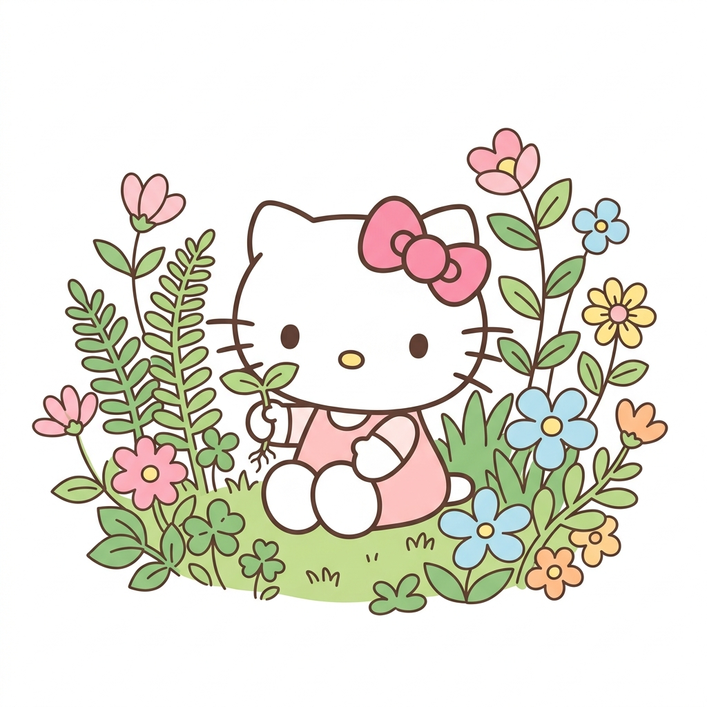

Encontrando o equilíbrio entre produção e meio ambiente para construir um amanhã mais verde e próspero.
Saiba maisUm jeito de produzir que cuida do planeta

O agronegócio é essencial para a economia do Brasil e para alimentar o mundo. Mas isso não precisa acontecer à custa do meio ambiente!
A agricultura sustentável busca um equilíbrio: produzir alimentos com qualidade e em quantidade suficiente, ao mesmo tempo em que preserva os recursos naturais como a água, o solo e a biodiversidade.
Os três caminhos para um futuro melhor
Preservar florestas, rios e a biodiversidade. Usar técnicas que respeitam o ciclo da natureza e reduzem a poluição do solo e da água.
Valorizar o trabalhador do campo, garantir condições dignas de trabalho e fortalecer as comunidades rurais com educação e saúde.
Produzir de forma eficiente e rentável, gerando riqueza sem comprometer os recursos que as próximas gerações vão precisar.
O impacto do agro no Brasil
Pequenas atitudes, grandes mudanças!
Plantar sem revolver a terra, mantendo a cobertura vegetal que protege o solo da erosão e mantém a umidade.
Solo saudávelTécnicas como irrigação por gotejamento economizam até 40% de água comparado aos métodos tradicionais.
Economia de águaProteger abelhas e outros polinizadores é essencial — eles são responsáveis por 75% das culturas alimentares!
BiodiversidadeCombinar agricultura com criação de animais e florestas no mesmo espaço, imitando os ciclos naturais.
Equilíbrio naturalUsar drones, sensores e inteligência para monitorar plantações e aplicar insumos só onde realmente precisa.
InovaçãoNós também fazemos parte! Escolher produtos locais, evitar desperdício e valorizar quem produz de forma sustentável.
Nós podemos!A terra não é uma herança dos nossos pais, mas um empréstimo dos nossos filhos.— Provérbio Indígena